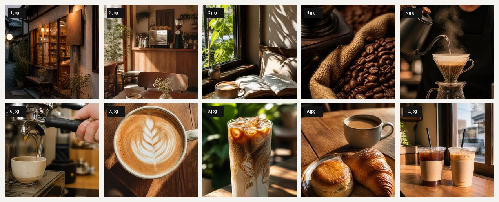
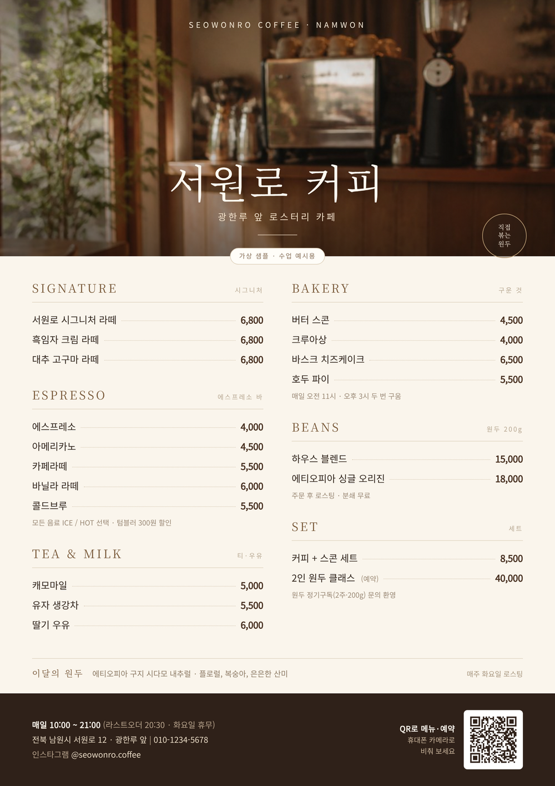
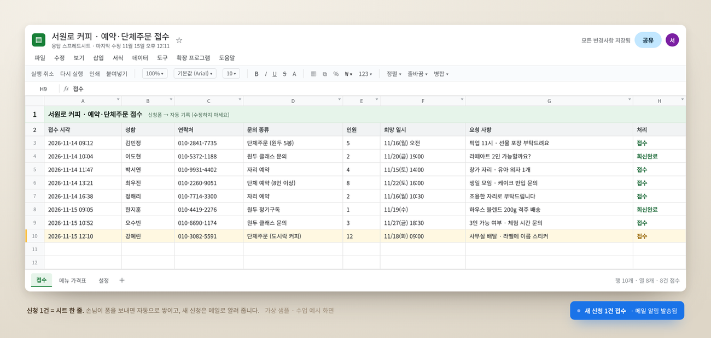
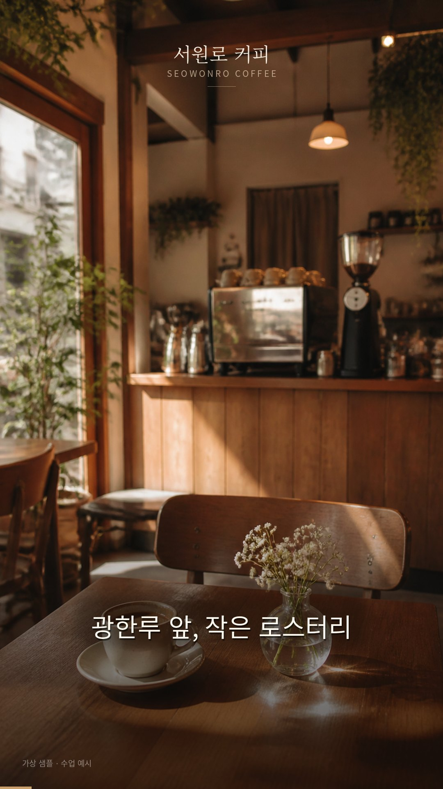

수업 전 준비 — 계정 5개 · 사진 10장
수업 시작 전에 아래 다섯 개를 열어 두세요. 새로 만드는 계정은 GitHub 하나뿐입니다. ChatGPT·Gemini는 구글 계정으로, Vercel은 GitHub 계정으로 3초 로그인합니다.
| # | 확인 | 통과 기준 | 안 되면 |
|---|---|---|---|
| 1 | 구글 계정 | 지메일이 열린다 | 수업 중에는 선생님 예비 계정으로 진행 |
| 2 | ChatGPT 또는 Gemini | 대화창에 “안녕”을 넣으면 답이 온다 | 둘 중 되는 것 하나만 쓰면 됩니다 |
| 3 | GitHub | 오른쪽 위에 내 프로필 아이콘이 보인다 | 파트 2에서 만들되, 10분 넘게 걸리면 선생님께 손을 듭니다 |
| 4 | Vercel | GitHub로 로그인해 대시보드가 보인다 | 파트 2에서 Continue with GitHub 한 번이면 끝 |
연습용 사진 10장 (「서원로 커피」 가상 가게)
가게 사진을 못 가져오셨어도 괜찮습니다. 아래 10장으로 수업을 끝까지 진행하고, 나중에 본인 가게 사진으로 바꿔 끼우면 됩니다.

압축을 풀면 1.jpg ~ 10.jpg 입니다. 파일 번호가 곧 영상 순서입니다.
개별 파일: 1 · 2 ·
3 · 4 ·
5 · 6 ·
7 · 8 ·
9 · 10


오늘 만드는 5가지 — 완성 예시를 먼저 보세요
 ① 가게 홈페이지 + QR
주소가 계속 무료인 1페이지 홈페이지
① 가게 홈페이지 + QR
주소가 계속 무료인 1페이지 홈페이지

② 메뉴판 (A4) 글자·가격까지 다 들어간 이미지 ③ 가게 앞 배너
2:3 세로 포스터
③ 가게 앞 배너
2:3 세로 포스터
 ④ 명함 앞뒤
인쇄소에 바로 보내는 파일
④ 명함 앞뒤
인쇄소에 바로 보내는 파일

⑤ 신청 자동 접수 시트 신청하면 시트에 쌓이고 메일이 옵니다
+ 30초 영상 사진 10장 + 폰 화면 녹화오늘의 순서 (180분)
| 시간 | 구간 | 끝나면 손에 남는 것 |
|---|---|---|
| 0~15 | 준비 · 둘러보기 | 로그인 5개 확인, 샘플 사진 준비 |
| 15~45 | 파트 1 · 메뉴판·배너·명함 | 이미지 3장 (menu.png / banner.png / card.png) |
| 45~85 | 파트 2 · 홈페이지 + QR | 내 주소 + QR 이미지 |
| 85~115 | 파트 3 · 신청 자동 접수 | 신청 1건이 쌓이는 구글 시트 |
| 115~150 | 파트 4 · 30초 영상 | 30초 MP4 1편 |
| 150~180 | 파트 5 · 홍보글 4종 | 복사해 둔 프롬프트 4장 |
메뉴판 · 배너 · 명함 — AI로 완성 이미지 3장
30분 · 디자인 프로그램도, 코드도 쓰지 않습니다. AI에게 한국말로 시키면 글자·가격까지 들어간 그림이 나옵니다. 나온 이미지를 저장해 인쇄소에 보내면 끝.
[ ] 안만 내 가게 정보로 바꿔 다시 뽑습니다.
③ 세 장(메뉴판 → 배너 → 명함)은 같은 대화창에서 이어서 시킵니다. 색과 분위기를 기억해 한 세트처럼 나옵니다.
① 메뉴판 — A4 세로, 2단 메뉴표
그대로 붙이면 위 ② 샘플 메뉴판과 같은 구성으로 나옵니다. 먼저 이걸로 결과를 확인하세요.
19개 전체 메뉴 버전입니다. 글자가 뭉개지면 아래 11개 버전을 쓰세요.
너는 카페 인쇄물을 만드는 디자이너야. 아래 내용으로 A4 세로 메뉴판 이미지 한 장을 만들어 줘.
글자·숫자·가격까지 전부 이 이미지 안에 넣어. 코드나 HTML은 주지 말고 이미지만 줘.
[가게 정보]
- 상호: 서원로 커피 / 영문 표기: SEOWONRO COFFEE · NAMWON
- 한 줄 소개: 광한루 앞 로스터리 카페
- 원형 배지 3줄: 직접 / 볶는 / 원두
- 이달의 메뉴: 이달의 원두 — 에티오피아 구지 시다모 내추럴 · 플로럴, 복숭아, 은은한 산미 / 오른쪽에 매주 화요일 로스팅
- 맨 아래 띠 3줄:
① 매일 10:00 ~ 21:00 (라스트오더 20:30 · 화요일 휴무)
② 전북 남원시 서원로 12 · 광한루 앞 | 010-1234-5678
③ 인스타그램 @seowonro.coffee
- QR 자리 옆 문구: QR로 메뉴·예약 / 휴대폰 카메라로 비쳐 보세요
[메뉴 — 2단(왼쪽·오른쪽) 표, 6칸]
왼쪽 단
- SIGNATURE / 시그니처
1. 서원로 시그니처 라떼 6,800
2. 흑임자 크림 라떼 6,800
3. 대추 고구마 라떼 6,800
- ESPRESSO / 에스프레소 바
4. 에스프레소 4,000
5. 아메리카노 4,500
6. 카페라떼 5,500
7. 바닐라 라떼 6,000
8. 콜드브루 5,500
· 아래 작은 안내: 모든 음료 ICE / HOT 선택 · 텀블러 300원 할인
- TEA & MILK / 티·우유
9. 캐모마일 5,000
10. 유자 생강차 5,500
11. 딸기 우유 6,000
오른쪽 단
- BAKERY / 구운 것
12. 버터 스콘 4,500
13. 크루아상 4,000
14. 바스크 치즈케이크 6,500
15. 호두 파이 5,500
· 아래 작은 안내: 매일 오전 11시 · 오후 3시 두 번 구움
- BEANS / 원두 200g
16. 하우스 블렌드 15,000
17. 에티오피아 싱글 오리진 18,000
· 아래 작은 안내: 주문 후 로스팅 · 분쇄 무료
- SET / 세트
18. 커피 + 스콘 세트 8,500
19. 2인 원두 클래스 (예약) 40,000
· 아래 작은 안내: 원두 정기구독(2주·200g) 문의 환영
[사진]
- 맨 위 3분의 1: 따뜻한 우드 톤 카페 카운터 사진 — 원두 그라인더, 에스프레소 머신, 창가 식물, 은은한 조명. 사진 위아래에 어두운 그라데이션을 깔아 흰 글자가 또렷하게
[디자인 — 위에서 아래로 이 순서대로]
1. 사진 맨 위 가운데: S E O W O N R O C O F F E E · N A M W O N (아주 작게, 흰색, 자간 넓게)
2. 사진 가운데: 서 원 로 커 피 — 흰색 한글 명조(바탕체), 아주 크게, 자간 넓게
바로 아래: 광한루 앞 로스터리 카페 (작게) / 그 아래 짧은 가로선 하나
3. 사진 오른쪽 아래: 얇은 금빛 테두리 원 안에 직접 / 볶는 / 원두 3줄 (아주 작게)
4. 사진과 종이색 경계 가운데: 크림색 알약 모양 라벨 하나에 아주 작은 글씨로 '가상 샘플 · 수업 예시용'
5. 중단 3분의 2: 크림색 종이 바탕(#F6F1E9). 2단 메뉴표. 섹션 제목은 왼쪽에 영문 대문자 자간 넓게, 오른쪽 끝에 한글 부제를 아주 작게. 섹션 제목 아래 얇은 실선
6. 메뉴 한 줄: 이름 왼쪽 + 가격 오른쪽 끝, 사이는 점선 리더선. 글자색은 진한 갈색(#4A3A2C). 섹션 안내 문구는 더 작고 흐리게
7. 메뉴표 맨 아래: 왼쪽에 이달의 원두 한 줄, 오른쪽에 매주 화요일 로스팅 (아주 작게)
8. 맨 아래 띠: 짙은 에스프레소 브라운(#2A211C) 바탕에 흰 글씨 3줄(왼쪽 정렬). 오른쪽에 흰 사각형 QR 자리(진짜 QR이 아니어도 됨)와 그 왼쪽에 QR로 메뉴·예약 / 휴대폰 카메라로 비쳐 보세요 (작게, 오른쪽 정렬)
[중요]
- 비율: A4 세로(210:297). 글자가 가장자리에 붙지 않게 여백 넉넉히
- 색: 크림색 · 진한 갈색 · 금빛 포인트. 사진은 따뜻한 우드 톤
- 모든 한글과 숫자를 정확하게. 가격은 한 자리도 틀리지 마
- 영어는 영문 상호(SEOWONRO COFFEE · NAMWON)와 섹션 제목(SIGNATURE 등)에만. 다른 영어 문구·워터마크·서명 넣지 마
- 위 19개 메뉴와 가격만. 없는 메뉴를 지어내지 마대괄호 안만 내 가게 정보로 바꿔 붙여넣습니다.
너는 카페·식당 인쇄물을 만드는 디자이너야. 아래 내용으로 A4 세로 메뉴판 이미지 한 장을 만들어 줘.
글자·숫자·가격까지 전부 이 이미지 안에 넣어. 코드나 HTML은 주지 말고 이미지만 줘.
[가게 정보]
- 상호: [가게명] / 영문 표기: [GAMENAME · REGION]
- 한 줄 소개: [한 줄로 우리 가게 소개]
- 원형 배지 3줄(작게): [직접 / 볶는 / 원두] 같은 짧은 3줄
- 이달의 메뉴 한 줄: [이달의 원두·재료] · [향미 3가지] / 오른쪽에 [매주 화요일 로스팅] 같은 짧은 문구
- 맨 아래 띠 3줄: [영업시간 · 라스트오더 · 휴무일] / [주소 · 전화번호] / [인스타그램 @계정]
- QR 자리 옆 문구: [QR로 메뉴·예약 / 휴대폰 카메라로 비쳐 보세요]
[메뉴 — 2단(왼쪽·오른쪽) 표. 섹션 4~6칸, 항목은 합쳐서 10개 안팎]
왼쪽 단
- 섹션1: [영문 제목 / 한글 부제]
1. [메뉴1] [가격1]
2. [메뉴2] [가격2]
3. [메뉴3] [가격3]
- 섹션2: [영문 제목 / 한글 부제]
4. [메뉴4] [가격4]
5. [메뉴5] [가격5]
· 섹션 아래 작은 안내 한 줄: [예: 모든 음료 ICE / HOT 선택 · 텀블러 300원 할인]
오른쪽 단
- 섹션3: [영문 제목 / 한글 부제]
6. [메뉴6] [가격6]
7. [메뉴7] [가격7]
- 섹션4: [영문 제목 / 한글 부제]
8. [메뉴8] [가격8]
- 섹션5: [영문 제목 / 한글 부제]
9. [메뉴9] [가격9]
10. [메뉴10] [가격10]
· 섹션 아래 작은 안내 한 줄: [예: 주문 후 로스팅 · 분쇄 무료]
[사진]
- 맨 위 3분의 1: [우리 가게 분위기가 보이는 사진 — 예: 원두 그라인더와 에스프레소 머신이 있는 우드 톤 카운터, 창가 식물]을 꽉 채우고, 흰 글자가 읽히게 사진 위아래에 어두운 그라데이션
[디자인 — 위에서 아래로 이 순서대로]
1. 사진 맨 위 가운데: 영문 상호를 아주 작게, 자간 넓게 (예: S E O W O N R O C O F F E E · N A M W O N)
2. 사진 가운데: 상호를 흰색 한글 명조(바탕체)로 아주 크게, 자간 넓게. 바로 아래 한 줄 소개(작게), 그 아래 짧은 가로선
3. 사진 오른쪽 아래: 얇은 금빛 테두리 원형 배지 안에 3줄, 아주 작게
4. 사진과 종이색 경계 가운데: 크림색 알약 모양 라벨 하나에 아주 작은 글씨 (예: 가을 신메뉴)
5. 중단 3분의 2: 크림색 종이 바탕(#F6F1E9)에 2단 메뉴표. 섹션 제목은 왼쪽에 영문 대문자 자간 넓게, 오른쪽 끝에 한글 부제를 아주 작게. 섹션 제목 아래 얇은 실선
6. 메뉴 한 줄: 메뉴명 왼쪽 + 가격 오른쪽 끝, 사이는 점선 리더선. 글자는 진한 갈색(#4A3A2C). 섹션 안내 문구는 더 작고 흐리게
7. 메뉴표 맨 아래: 왼쪽에 이달의 메뉴 한 줄, 오른쪽에 짧은 문구 (아주 작게)
8. 맨 아래: 짙은 에스프레소 브라운 띠(#2A211C)에 흰 글씨 3줄(왼쪽). 오른쪽에 흰 사각형 QR 자리(진짜 QR이 아니어도 됨, 검은 사각 패턴)와 그 옆 작은 문구
[중요]
- 비율: A4 세로(210:297). 위아래 여백 넉넉히, 글자가 가장자리에 붙지 않게
- 색은 크림색 · 진한 갈색 · 금빛 포인트 3색만. 사진은 따뜻한 우드 톤
- 모든 한글과 숫자를 정확하게. 글자를 뭉개거나 줄이지 마. 항목이 많아 글자가 작아지면 항목을 줄여서 다시
- 영어는 영문 상호와 섹션 제목에만. 그 외 영어 문구·워터마크·서명 넣지 마
- 없는 메뉴나 가격을 지어내지 마. 위 목록만샘플과 같은 구성 그대로, 메뉴만 11개로 줄인 버전입니다. 8분 안에 글자까지 또렷하게 나오는 쪽은 이쪽입니다.
너는 카페 인쇄물을 만드는 디자이너야. 아래 내용으로 A4 세로 메뉴판 이미지 한 장을 만들어 줘.
글자·숫자·가격까지 전부 이 이미지 안에 넣어. 코드나 HTML은 주지 말고 이미지만 줘.
[가게 정보]
- 상호: 서원로 커피 / 영문 표기: SEOWONRO COFFEE · NAMWON
- 한 줄 소개: 광한루 앞 로스터리 카페
- 원형 배지 3줄: 직접 / 볶는 / 원두
- 이달의 메뉴: 이달의 원두 — 에티오피아 구지 시다모 내추럴 · 플로럴, 복숭아, 은은한 산미 / 오른쪽에 매주 화요일 로스팅
- 맨 아래 띠 3줄:
① 매일 10:00 ~ 21:00 (라스트오더 20:30 · 화요일 휴무)
② 전북 남원시 서원로 12 · 광한루 앞 | 010-1234-5678
③ 인스타그램 @seowonro.coffee
- QR 자리 옆 문구: QR로 메뉴·예약 / 휴대폰 카메라로 비쳐 보세요
[메뉴 — 2단(왼쪽·오른쪽) 표, 5칸]
왼쪽 단
- SIGNATURE / 시그니처
1. 서원로 시그니처 라떼 6,800
2. 흑임자 크림 라떼 6,800
3. 대추 고구마 라떼 6,800
- ESPRESSO / 에스프레소 바
4. 에스프레소 4,000
5. 아메리카노 4,500
6. 카페라떼 5,500
· 아래 작은 안내: 모든 음료 ICE / HOT 선택 · 텀블러 300원 할인
오른쪽 단
- BAKERY / 구운 것
7. 버터 스콘 4,500
8. 크루아상 4,000
· 아래 작은 안내: 매일 오전 11시 · 오후 3시 두 번 구움
- BEANS / 원두 200g
9. 하우스 블렌드 15,000
· 아래 작은 안내: 주문 후 로스팅 · 분쇄 무료
- SET / 세트
10. 커피 + 스콘 세트 8,500
11. 2인 원두 클래스 (예약) 40,000
· 아래 작은 안내: 원두 정기구독(2주·200g) 문의 환영
[사진]
- 맨 위 3분의 1: 따뜻한 우드 톤 카페 카운터 사진 — 원두 그라인더, 에스프레소 머신, 창가 식물, 은은한 조명. 사진 위아래에 어두운 그라데이션을 깔아 흰 글자가 또렷하게
[디자인 — 위에서 아래로 이 순서대로]
1. 사진 맨 위 가운데: S E O W O N R O C O F F E E · N A M W O N (아주 작게, 흰색, 자간 넓게)
2. 사진 가운데: 서 원 로 커 피 — 흰색 한글 명조(바탕체), 아주 크게, 자간 넓게
바로 아래: 광한루 앞 로스터리 카페 (작게) / 그 아래 짧은 가로선 하나
3. 사진 오른쪽 아래: 얇은 금빛 테두리 원 안에 직접 / 볶는 / 원두 3줄 (아주 작게)
4. 사진과 종이색 경계 가운데: 크림색 알약 모양 라벨 하나에 아주 작은 글씨로 '가상 샘플 · 수업 예시용'
5. 중단 3분의 2: 크림색 종이 바탕(#F6F1E9). 2단 메뉴표. 섹션 제목은 왼쪽에 영문 대문자 자간 넓게, 오른쪽 끝에 한글 부제를 아주 작게. 섹션 제목 아래 얇은 실선
6. 메뉴 한 줄: 이름 왼쪽 + 가격 오른쪽 끝, 사이는 점선 리더선. 글자색은 진한 갈색(#4A3A2C). 섹션 안내 문구는 더 작고 흐리게
7. 메뉴표 맨 아래: 왼쪽에 이달의 원두 한 줄, 오른쪽에 매주 화요일 로스팅 (아주 작게)
8. 맨 아래 띠: 짙은 에스프레소 브라운(#2A211C) 바탕에 흰 글씨 3줄(왼쪽 정렬). 오른쪽에 흰 사각형 QR 자리(진짜 QR이 아니어도 됨)와 그 왼쪽에 QR로 메뉴·예약 / 휴대폰 카메라로 비쳐 보세요 (작게, 오른쪽 정렬)
[중요]
- 비율: A4 세로(210:297). 글자가 가장자리에 붙지 않게 여백 넉넉히
- 메뉴는 위 11개만. 글자가 크고 또렷하게, 줄 간격 넉넉히
- 모든 한글과 숫자를 정확하게. 가격은 한 자리도 틀리지 마
- 영어는 영문 상호(SEOWONRO COFFEE · NAMWON)와 섹션 제목(SIGNATURE 등)에만. 다른 영어 문구·워터마크·서명 넣지 마② 가게 앞 배너 — 2:3 세로 포스터
그대로 붙이면 위 ③ 샘플 배너와 같은 세로 포스터가 나옵니다.
너는 카페 홍보 이미지를 만드는 디자이너야. 아래 내용으로 세로 포스터(2:3) 배너 이미지 한 장을 만들어 줘.
글자·숫자·가격까지 전부 이 이미지 안에 넣어. 코드나 HTML은 주지 말고 이미지만 줘.
[가게 정보]
- 상호: 서원로 커피 / 영문 표기: SEOWONRO COFFEE · NAMWON
- 위 작은 줄: 2026 · 가을 신메뉴
- 한 줄 소개: 광한루 앞 로스터리 카페
- 큰 제목 2줄: 가을, 서원로에서 / 대추 고구마 라떼
- 설명 2줄: 직접 볶은 원두에 대추를 졸인 시럽을 더했습니다 / 따뜻하게, 한 잔에 6,800원
- 강조 박스: 11월 한정 · 텀블러 300원 할인
- 아래 3줄: 매일 10:00 ~ 21:00 (화요일 휴무) / 전북 남원시 서원로 12 · 광한루 앞 / 010-1234-5678
- QR 옆 문구: MENU · QR
[사진]
- 배경 전체: 대추 고구마 라떼 한 잔을 위에서 내려다본 클로즈업 — 흰 세라믹 컵, 라떼아트, 어두운 우드 테이블. 사진이 화면을 꽉 채우게
- 위쪽과 아래쪽에 어두운 그라데이션을 깔아 크림색 글자가 또렷하게
[디자인 — 위에서 아래로 이 순서대로]
1. 가장자리에서 조금 안쪽에 얇은 크림색(금빛 도는) 테두리 프레임 한 줄
2. 맨 위 가운데: S E O W O N R O C O F F E E · N A M W O N (아주 작게, 크림색, 자간 넓게)
3. 그 아래: 2 0 2 6 · 가 을 신 메 뉴 (작게, 자간 넓게)
4. 화면 아래쪽 3분의 1 위: 광한루 앞 로스터리 카페 (작게, 가운데)
5. 그 아래 큰 제목 2줄: 가을, 서원로에서 / 대추 고구마 라떼 — 크림색, 아주 크고 두껍게, 화면 폭의 80% 차지
6. 그 아래 짧은 가로선 하나
7. 그 아래 설명 2줄 (작게, 가운데 정렬): 직접 볶은 원두에 대추를 졸인 시럽을 더했습니다 / 따뜻하게, 한 잔에 6,800원
8. 그 아래 얇은 크림색 테두리의 네모 박스 안에: 11월 한정 · 텀블러 300원 할인
9. 맨 아래 왼쪽에 3줄 (아주 작게, 왼쪽 정렬): 매일 10:00 ~ 21:00 (화요일 휴무) / 전북 남원시 서원로 12 · 광한루 앞 / 010-1234-5678
10. 맨 아래 오른쪽에 흰 사각형 QR 자리(진짜 QR이 아니어도 됨)와 그 아래 MENU · QR (아주 작게)
[중요]
- 비율: 2:3 세로 (예: 1024x1536, 샘플 860x1290). 가게 앞 입간판·매장 포스터에 그대로 쓸 수 있게 (X배너로 뽑을 때는 인쇄소에서 세로로 길게 맞춰 인쇄)
- 글자가 배경 사진에 묻히지 않게. 큰 제목은 3초 안에 읽혀야 함
- 모든 한글·숫자를 정확하게. 없는 문구를 지어내지 마
- 영어는 SEOWONRO COFFEE · NAMWON과 MENU · QR 표기에만. 워터마크·로고·서명 넣지 마대괄호 안만 바꿔 붙여넣습니다. A4가 아니라 2:3 세로(예: 1024x1536, 샘플 860×1290)입니다.
너는 카페·식당 홍보 이미지를 만드는 디자이너야. 아래 내용으로 세로 포스터(2:3) 배너 이미지 한 장을 만들어 줘.
글자·숫자·가격까지 전부 이 이미지 안에 넣어. 코드나 HTML은 주지 말고 이미지만 줘.
[가게 정보]
- 상호: [가게명] / 영문 표기: [GAMENAME · REGION]
- 위 작은 줄: [2026 · 가을 신메뉴] 같은 시기·성격 한 줄
- 한 줄 소개: [한 줄로 우리 가게 소개]
- 큰 제목 2줄: [짧은 첫 줄] / [대표 메뉴 이름]
- 설명 2줄: [재료·만든 방식 한 줄] / [가격이 들어간 한 줄]
- 강조 박스: [11월 한정 · 텀블러 300원 할인] 같은 짧은 혜택
- 아래 3줄: [영업시간·휴무일] / [주소] / [전화번호]
- QR 옆 문구: [MENU · QR]
[사진]
- 배경 전체: [대표 메뉴]를 위에서 내려다본 클로즈업 사진 (예: 흰 컵에 라떼아트, 어두운 우드 테이블)을 화면에 꽉 채우게
- 위쪽과 아래쪽에 어두운 그라데이션을 깔아 흰 글자가 또렷하게
[디자인 — 위에서 아래로 이 순서대로]
1. 가장자리에서 조금 안쪽에 얇은 크림색(금빛 도는) 테두리 프레임 한 줄
2. 맨 위 가운데: 영문 상호를 아주 작게, 크림색, 자간 넓게
3. 그 아래: 시기·성격 한 줄 (작게, 자간 넓게)
4. 화면 아래쪽 3분의 1 위: 한 줄 소개 (작게, 가운데)
5. 그 아래 큰 제목 2줄: 크림색, 아주 크고 두껍게, 화면 폭의 80% 차지
6. 그 아래 짧은 가로선 하나
7. 그 아래 설명 2줄 (작게, 가운데 정렬)
8. 그 아래 얇은 크림색 테두리의 네모 박스 안에 강조 문구
9. 맨 아래 왼쪽에 3줄 (아주 작게, 왼쪽 정렬): 영업시간 / 주소 / 전화
10. 맨 아래 오른쪽에 흰 사각형 QR 자리(진짜 QR이 아니어도 됨)와 그 아래 작은 문구
[중요]
- 비율: 2:3 세로 (예: 1024x1536, 샘플 860x1290). 가게 앞 입간판·매장 포스터에 그대로 쓸 수 있게 (X배너로 뽑을 때는 인쇄소에서 세로로 길게 맞춰 인쇄)
- 글자가 배경 사진에 묻히지 않게. 큰 제목은 3초 안에 읽혀야 함
- 모든 한글·숫자를 정확하게. 없는 문구를 지어내지 마
- 영어는 영문 상호와 QR 옆 문구에만. 워터마크·로고·서명 넣지 마③ 명함 — 가로 90×50mm, 앞뒤 두 장
두 장이 한 이미지에 나옵니다. 대표 이름·연락처는 가상입니다.
너는 명함을 만드는 디자이너야. 아래 내용으로 가로 명함 앞면·뒷면 두 장을 한 이미지에 나란히 만들어 줘.
글자·숫자까지 전부 이 이미지 안에 넣어. 코드나 HTML은 주지 말고 이미지만 줘.
[명함 정보]
- 상호: 서원로 커피 / 영문 표기: SEOWONRO COFFEE
- 업종 한 줄: 광한루 앞 로스터리 카페
- 이름·직함: 김서원 / 대표 · BARISTA
- 연락처 4줄:
T. 010-1234-5678
A. 전북 남원시 서원로 12 · 광한루 앞
H. 매일 10:00 ~ 21:00 (화요일 휴무)
IG. @seowonro.coffee · 당근 이웃
- 앞면 한 줄 문구: 직접 볶는 원두 · 매일 굽는 스콘
- 뒷면 아래 문구: 직접 볶는 원두 · 매일 오전 11시 굽는 스콘
- 모노그램 글자: 서
- QR 옆 문구: 카메라로 비추면 / 메뉴·예약 페이지
[구도]
- 명함 2장(왼쪽=앞면, 오른쪽=뒷면)을 나란히, 사이 간격을 두고, 연한 웜베이지 바탕에 살짝 그림자
- 명함 비율: 가로 90 : 세로 50 (9:5). 모서리는 아주 살짝 둥글게
[앞면 — 왼쪽 카드]
- 크림색 종이 바탕(#FBF5EA), 안쪽에 얇은 금빛 테두리 한 줄 (가장자리 안전 여백 4mm)
- 위쪽 가운데: 얇은 금빛 원 안에 '서' 한 글자 (명조)
- 그 아래: S E O W O N R O C O F F E E (아주 작게, 자간 넓게)
- 가운데: 서 원 로 커 피 (명조, 크게, 자간 넓게)
- 그 아래: 광한루 앞 로스터리 카페 (작게)
- 그 아래 짧은 가로선, 그 아래: 직접 볶는 원두 · 매일 굽는 스콘 (아주 작게)
- 모든 글자는 가운데 정렬
[뒷면 — 오른쪽 카드]
- 짙은 에스프레소 브라운 바탕(#2A211C), 글자는 크림색
- 왼쪽 위: 김서원 (크게) 옆에 대표 · BARISTA (아주 작게)
- 그 아래: S E O W O N R O C O F F E E (아주 작게, 자간 넓게)
- 그 아래 4줄, 한 줄에 하나씩 왼쪽 정렬, 작게:
T. 010-1234-5678
A. 전북 남원시 서원로 12 · 광한루 앞
H. 매일 10:00 ~ 21:00 (화요일 휴무)
IG. @seowonro.coffee · 당근 이웃
- 맨 아래: 직접 볶는 원두 · 매일 오전 11시 굽는 스콘 (아주 작게, 흐리게)
- 오른쪽: 흰 사각형 QR 자리(진짜 QR이 아니어도 됨) + 그 아래 카메라로 비추면 / 메뉴·예약 페이지 (아주 작게)
[중요]
- 가로로 긴 이미지 한 장에 앞·뒤 두 장이 다 들어가게. 명함 한 장이 화면 폭의 절반 조금 안 되게
- 가장자리 여백 4mm 이상. 글자를 테두리에 붙이지 마 (재단 여유)
- 모든 한글·숫자를 정확하게. 전화번호는 한 자리도 틀리지 마
- 영어는 SEOWONRO COFFEE와 T./A./H./IG. 표기에만. 워터마크·서명 넣지 마너는 명함을 만드는 디자이너야. 아래 내용으로 가로 명함 앞면·뒷면 두 장을 한 이미지에 나란히 만들어 줘.
글자·숫자까지 전부 이 이미지 안에 넣어. 코드나 HTML은 주지 말고 이미지만 줘.
[명함 정보]
- 상호: [가게명] / 영문 표기: [GAMENAME COFFEE]
- 업종 한 줄: [한 줄로 우리 가게 소개]
- 이름·직함: [이름] / [대표 · BARISTA] 같은 직함
- 연락처 4줄: T. [전화번호] / A. [주소] / H. [영업시간·휴무일] / IG. [인스타 계정 · 한 줄]
- 앞면 한 줄 문구: [예: 직접 볶는 원두 · 매일 굽는 스콘]
- 뒷면 아래 문구: [예: 직접 볶는 원두 · 매일 오전 11시 굽는 스콘]
- 모노그램 글자: [상호 첫 글자 한 자 — 예: 서]
- QR 옆 문구: [카메라로 비추면 / 메뉴·예약 페이지]
[구도]
- 명함 2장(왼쪽=앞면, 오른쪽=뒷면)을 나란히, 사이 간격을 두고, 연한 웜베이지 바탕에 살짝 그림자
- 명함 비율: 가로 90 : 세로 50 (9:5). 모서리는 아주 살짝 둥글게
[앞면 — 왼쪽 카드]
- 크림색 종이 바탕(#FBF5EA), 안쪽에 얇은 금빛 테두리 한 줄 (가장자리 안전 여백 4mm)
- 위쪽 가운데: 얇은 금빛 원 안에 모노그램 한 글자 (명조)
- 그 아래: 영문 상호를 아주 작게, 자간 넓게
- 가운데: 상호를 한글 명조로 크게, 자간 넓게
- 그 아래: 업종 한 줄 (작게)
- 그 아래 짧은 가로선, 그 아래 앞면 한 줄 문구 (아주 작게)
- 모든 글자는 가운데 정렬
[뒷면 — 오른쪽 카드]
- 짙은 에스프레소 브라운 바탕(#2A211C), 글자는 크림색
- 왼쪽 위: 이름(크게) 옆에 직함(아주 작게)
- 그 아래: 영문 상호를 아주 작게, 자간 넓게
- 그 아래 4줄: T. / A. / H. / IG. — 한 줄에 하나씩, 왼쪽 정렬, 작게
- 맨 아래: 뒷면 아래 문구 (아주 작게, 흐리게)
- 오른쪽: 흰 사각형 QR 자리(진짜 QR이 아니어도 됨) + 그 아래 QR 옆 문구 (아주 작게)
[중요]
- 가로로 긴 이미지 한 장에 앞·뒤 두 장이 다 들어가게. 명함 한 장이 화면 폭의 절반 조금 안 되게
- 가장자리 여백 4mm 이상. 글자를 테두리에 붙이지 마 (재단 여유)
- 모든 한글·숫자를 정확하게. 전화번호는 한 자리도 틀리지 마
- 영어는 영문 상호와 T./A./H./IG. 표기에만. 워터마크·서명 넣지 마①-2 이미지가 나왔는데 마음에 안 들 때 — 한 줄만 시키기
그림을 처음부터 다시 그리는 게 아니라 한 군데만 짚어서 다시 시킵니다. 한 문장에 여러 개를 넣으면 또 틀립니다.
증상에 맞는 줄만 복사해 붙여넣으세요. (같은 대화창에서)
① 가격을 바꿀 때
"카페라떼 5,500원을 6,000원으로 바꿔서 같은 메뉴판을 다시 만들어 줘. 다른 건 그대로."
② 글자가 뭉개졌을 때
"글자가 뭉개진 부분만 또렷하게 다시 그려 줘. 메뉴 이름과 가격은 한 글자도 틀리면 안 돼. 글자를 더 크게, 메뉴 줄 수를 줄여서 다시."
③ 메뉴가 많아 글자가 작아졌을 때
"메뉴를 11개만 남기고 나머지는 빼 줘. 2단 구성은 그대로. 글자를 키우고 줄 간격을 넓혀서 다시."
④ 색·분위기가 마음에 안 들 때
"배경을 크림색 종이 느낌으로, 글자는 진한 갈색으로 바꿔서 다시. 메뉴와 가격은 그대로."
⑤ 비율이 안 맞을 때
"이번엔 A4 세로(210:297) 비율로, 위아래가 잘리지 않게 다시 만들어 줘."
⑥ 설명만 하고 그림을 안 줄 때
"설명은 하지 말고 이미지로만 만들어 줘."
⑦ 배너가 정사각으로 나왔을 때
"2:3 세로(예: 1024x1536)로 다시. 위아래 여백을 살리고 큰 제목은 두 줄 그대로."
⑧ 명함이 한 장만 나왔을 때
"앞면·뒷면 두 장을 한 이미지에 나란히, 가로 90:50 비율로 다시 만들어 줘."이미지가 안 나와. 지금 대화에서 이미지 생성이 되는지 확인하고, 안 되면 같은 내용을 이미지로 다시 만들어 줘.
한글이 자꾸 깨져. 메뉴를 11개에서 9개로 줄이고, 글자를 크게 해서 다시 그려 줘.
같은 내용을 분위기만 다르게 3장 만들어 줘. (마음에 드는 걸 고를게)
배너가 정사각으로 나왔어. 2:3 세로(예: 1024x1536)로 다시, 위아래 여백을 살려서 만들어 줘.메뉴판이 끝난 같은 대화창에 붙여넣으면 색·분위기가 이어집니다.
이번엔 같은 가게로 2:3 세로(예: 1024x1536) 가게 앞 배너를 만들어 줘. 위 메뉴판과 같은 크림색·진한 갈색에, 가장자리에서 조금 안쪽에 얇은 크림색 테두리 프레임을 한 줄. 배경은 라떼 한 잔을 위에서 내려다본 사진으로 꽉 채워. 맨 위에 영문 상호와 "2026 · 가을 신메뉴", 중간에 "광한루 앞 로스터리 카페", 아래쪽에 큰 제목 두 줄 "가을, 서원로에서 / 대추 고구마 라떼", 설명 두 줄, 얇은 박스 안에 "11월 한정 · 텀블러 300원 할인", 맨 아래 왼쪽에 영업시간·주소·전화, 오른쪽에 QR 자리와 "MENU · QR". 글자까지 이미지 안에 넣어 줘.이번엔 같은 가게 명함을 만들어 줘. 가로 90:50 명함 두 장을 한 이미지에 나란히 — 왼쪽은 크림색 앞면(위에 원형 모노그램 '서', SEOWONRO COFFEE, 서 원 로 커 피, 광한루 앞 로스터리 카페, 직접 볶는 원두 · 매일 굽는 스콘), 오른쪽은 짙은 갈색 뒷면(김서원 대표 · BARISTA, T./A./H./IG. 네 줄, 오른쪽에 QR 자리). 위와 같은 색으로. 글자까지 이미지 안에.확인 — 이 5개만 보세요
- 상호·메뉴명·가격이 모두 읽힌다
- 가격이 2단으로 나란히 정렬됐다
- A4 세로 비율에 잘린 글자가 없다
- 맨 아래 띠에 영업시간·주소·전화가 들어갔다
- 없는 메뉴를 지어내지 않았다 (하나라도 어긋나면 한 줄 수정으로 바로 고칩니다)
🖨️ 저장과 인쇄 — 인쇄소에 보낼 때 확인할 3가지
- 파일 — 바탕화면
가게이름_홍보물폴더에menu.png,banner.png,card.png로 저장. 파일명에 공백·특수문자는 빼세요. - 해상도 — AI 이미지는 보통 1024~1536px입니다. 명함·배너는 그대로 충분하고, A4 메뉴판을 크게 인쇄할 때만 인쇄소에 “업스케일 해 주세요” 한마디.
- 여백 — 명함은 가장자리 3mm를 잘라냅니다. 글자가 붙어 있으면 잘리니 “가장자리 여백 넉넉히”를 프롬프트에 꼭 넣으세요.
SNS에는 banner.png를 그대로 올리면 됩니다. 인스타 피드(4:5)용은
“같은 디자인을 4:5로 조금만 더 길게”, 스토리·릴스 커버는 “9:16 세로로 다시” 한 줄이면 한 장 더 나옵니다.
🚧 막히면 — 이미지 생성에서 자주 막히는 곳
- 그림이 안 나오고 글만 나온다 → “이미지로만 만들어 줘” 한 줄. 그래도 안 되면 새 대화에서 다시.
- 한글이 뭉개진다 → 메뉴를 9개 이하로 줄이고 “글자를 크게”. 세 번 고쳐도 안 되면 문구를 더 짧게.
- 가격·메뉴가 틀린다 → “○○을 ○○으로 바꿔 줘”를 한 번에 하나씩.
- 비율이 안 맞는다 → 메뉴판 “A4 세로(210:297)로 다시” / 배너 “2:3 세로로 다시” / 명함 “가로 90:50, 앞뒤 두 장으로 다시”.
- 무료 계정 이미지 한도에 걸렸다 → 선생님 샘플 3장을 받아 그대로 쓰고 파트 2로 넘어갑니다. 오늘 배우는 건 그림 그리기가 아니라 시키는 말입니다.
내 가게 홈페이지 + QR — 오늘의 하이라이트
40분 · AI가 쓴 index.html 한 장을 GitHub에 보관하고, Vercel로 연결해
무료 주소(~.vercel.app)를 받은 뒤 그 주소로 QR을 만듭니다.
2-1. 홈페이지 뼈대 만들기 — 마스터 프롬프트
파트 1에서 쓰던 같은 AI 창에 붙여넣습니다. 먼저 실제 예시로 결과를 보고, 형식(틀)로 내 가게를 만드세요.
그대로 붙이면 아래 데모와 같은 구성으로 나옵니다. 사진 파일 이름만 내 사진으로 바꾸면 됩니다.
너는 소상공인 홈페이지를 만드는 웹 디자이너야.
아래 정보로 '서원로 커피' 1페이지 홈페이지를 HTML 파일 하나로 만들어 줘.
CSS와 스크립트까지 그 파일 하나에 다 들어가야 하고, 외부 라이브러리는 쓰지 마.
[가게 정보]
- 상호: 서원로 커피
- 한 줄 소개: 광한루 앞, 매일 직접 볶는 작은 로스터리
- 전화: 010-1234-5678 / 주소: 전북 남원시 서원로 12 (광한루 앞)
- 영업시간: 매일 10:00~21:00 (라스트오더 20:30) / 휴무일: 화요일 (원두 로스팅 하는 날)
- 주차: 가게 앞 2대, 광한루 공영주차장 도보 2분
- 대표 메뉴 3개 (이름 / 한 줄 설명 / 가격)
1. 서원로 시그니처 라떼 / 고소한 흑임자 크림을 올린 라떼, 제일 많이 나갑니다 / 6,800원
2. 버터 스콘 / 겉은 바삭 속은 촉촉, 오전 11시·오후 3시 갓 구움, 커피와 세트 8,500원 / 4,500원
3. 하우스 블렌드 원두 200g / 주문 후 로스팅·분쇄 무료 / 15,000원
- 메뉴판
· SIGNATURE(시그니처): 서원로 시그니처 라떼 6,800 / 흑임자 크림 라떼 6,800 / 대추 고구마 라떼 6,800 (가을 한정)
· ESPRESSO(커피): 에스프레소 4,000 / 아메리카노 4,500 / 카페라떼 5,500 / 바닐라 라떼 6,000 / 콜드브루 5,500
· TEA & MILK(티·우유): 캐모마일 5,000 / 유자 생강차 5,500 / 딸기 우유 6,000
· BAKERY(구운 것): 버터 스콘 4,500 / 크루아상 4,000 / 바스크 치즈케이크 6,500 / 호두 파이 5,500 — 매일 오전 11시·오후 3시 두 번 구움
· BEANS(원두 200g): 하우스 블렌드 15,000 / 에티오피아 싱글 오리진 18,000 — 주문 후 로스팅·분쇄 무료
- 사진: 같은 폴더의 2.jpg(매장 내부), 7.jpg(라떼), 9.jpg(스콘), 4.jpg(원두) 를 써. (내 사진으로 바꿀 때는 그 파일 이름을 그대로 쓰면 됨)
[조건 — 이 순서 그대로]
1. 휴대폰(폭 390px)에서 먼저 예쁘게. 가로 스크롤 없이. 본문 글자 16px 이상.
2. ① 상단 바: 원형 마크 '서' + 상호 "서원로 커피", 오른쪽에 [전화](tel:01012345678) 버튼과 [예약·단체주문](#book) 버튼
3. ② 히어로: 2.jpg 를 화면 높이 60%로 꽉 채우고 위에 어두운 그라데이션. 아래쪽에 "영업 중 · 오늘 21:00까지" 배지, 상호(가장 크게, 세리프), "광한루 앞, 매일 직접 볶는 작은 로스터리", 버튼 2개(자리 예약하기 / 메뉴 보기)
4. ③ 정보 띠 4칸(진한 갈색 #2f2119 바탕, 밝은 글자): "매일 10:00~21:00"(라스트오더 20:30) / "화요일 휴무"(원두 로스팅 하는 날) / "남원시 서원로 12"(광한루 앞 도보 3분) / "010-1234-5678"(전화·문자 예약)
5. ④ 「오늘 가장 많이 나간 세 가지」 카드 3개: 7.jpg·9.jpg·4.jpg 사진 + 태그(SIGNATURE / BAKERY·11:00 / BEANS·200g) + 이름 + 한 줄 설명 + 가격. 폰에서는 세로로 쌓이게
6. ⑤ 「메뉴와 가격」: 위 5개 그룹 그대로. 메뉴명 왼쪽, 가격 오른쪽, 사이는 점선. 표 위에 "모든 음료 ICE/HOT 선택 · 텀블러 지참 시 300원 할인"
7. ⑥ 「오시는 길」: 주소 / 도보(광한루 정문 3분, 남원시청 8분) / 주차(가게 앞 2대, 광한루 공영주차장 도보 2분) / 전화 4줄 표 + 오른쪽에 약도 박스(지도 API 없이 핀과 도로 느낌만) + "카카오맵에서 열기" 링크8. ⑦ 「자리 예약 · 단체주문 · 클래스 문의」 폼(진한 갈색 배경 #2f2119): 성함(name, 필수), 연락처(phone, 필수), 문의 종류(kind 선택: 자리 예약 / 단체 예약 (8인 이상) / 단체 주문 (커피·원두) / 원두 클래스 문의), 인원(people 선택: 1명 / 2명 / 3~4명 / 5~7명 / 8명 이상), 희망 날짜·시간(when), 요청 사항(memo, 3줄). 폼 태그 id="bookForm". 제출 버튼을 누르면 화면에 "접수되었습니다 (예시 화면)" 안내가 뜨고 폼이 비워지게(실제 전송 없음). 성함·연락처가 비면 그 칸에 빨간 테두리. 폼 위에 "8인 이상 단체는 3일 전에 알려 주세요"
9. ⑧ QR 안내 한 칸(흰 카드: QR 자리 132px + "가게 앞에 이 QR을 붙여 두세요") + 푸터(상호·전북 남원시 서원로 12·매일 10:00~21:00(화요일 휴무)·010-1234-5678 + "이 페이지는 수업용 샘플입니다" 한 줄)
10. 색: 바탕 #faf5ec(크림), 카드 #fffdf8(종이), 글자 #2b2119, 진한 갈색 #2f2119, 커피 #5b3a26, 포인트 금색 #c08a4a, 선 #e8ddcb, 초록 #2f4232. 제목은 세리프(Noto Serif KR), 본문은 시스템 고딕
11. index.html 파일 하나. 설명 없이 코드 전체만 보여 줘.너는 소상공인 홈페이지를 만드는 웹 디자이너야.
아래 정보로 우리 가게 1페이지 홈페이지를 HTML 파일 하나로 만들어 줘.
CSS와 스크립트까지 그 파일 하나에 다 들어가야 하고, 외부 라이브러리는 쓰지 마.
[가게 정보]
- 상호: [가게명]
- 한 줄 소개: [한 줄 소개]
- 전화: [전화번호] / 주소: [주소]
- 영업시간: [예: 매일 10:00~21:00] / 휴무일: [예: 화요일]
- 주차: [예: 가게 앞 2대, 공영주차장 도보 2분]
- 대표 메뉴 3개 (이름 / 한 줄 설명 / 가격)
1. [메뉴1] / [설명] / [가격]
2. [메뉴2] / [설명] / [가격]
3. [메뉴3] / [설명] / [가격]
- 메뉴판: 그룹 [3~5개], 각 그룹에 메뉴 [3~5줄] — 이름 / 가격
- 사진: 같은 폴더의 [사진 파일명] 을 써. (예: 1.jpg, 2.jpg … / 사진이 없으면 그라데이션으로 대신)
[조건 — 이 순서 그대로]
1. 휴대폰(폭 390px)에서 먼저 예쁘게. 어떤 폰에서도 가로 스크롤이 생기면 안 됨. 본문 글자 16px 이상.
2. ① 상단 바: 상호 + [전화] 버튼(tel: 링크) + [예약·단체주문] 버튼(#book 으로 이동)
3. ② 히어로: 매장 사진을 크게 깔고 그 위에 "영업 중 · 오늘 [마감시각]까지" 배지, 상호(가장 크게), 한 줄 소개, 버튼 2개(자리 예약하기 / 메뉴 보기)
4. ③ 정보 띠 4칸: 영업시간(라스트오더 포함) / 휴무일 / 주소 / 전화 — 진한 갈색 바탕에 밝은 글자
5. ④ 「오늘 가장 많이 나간 세 가지」 카드 3개: 사진 + 태그 + 이름 + 한 줄 설명 + 가격
6. ⑤ 「메뉴와 가격」: 그룹별 표. 메뉴명 왼쪽, 가격 오른쪽, 사이는 점선. 그룹 아래 작은 안내 한 줄
7. ⑥ 「오시는 길」: 주소·도보·주차·전화 4줄 표 + 약도 박스(지도 API는 쓰지 않고 핀과 도로 느낌만) + "카카오맵에서 열기" 링크
8. ⑦ 「예약·단체주문·클래스 문의」 폼(진한 갈색 배경): 성함(name, 필수), 연락처(phone, 필수), 문의 종류(kind, 선택: [선택지 3~4개]), 인원(people, 선택), 희망 날짜·시간(when), 요청 사항(memo, 3줄). 폼 태그에 id="bookForm". 버튼을 누르면 화면에 "접수되었습니다 (예시 화면)" 안내가 뜨고 폼이 비워지게 (실제 전송은 없음). 성함·연락처가 비면 그 칸에 빨간 테두리
9. ⑧ QR 안내 한 칸(흰 카드에 QR 자리 132px + "가게 앞에 이 QR을 붙여 두세요") + 푸터(상호·주소·영업시간·전화 + "수업용 샘플 페이지" 한 줄)
10. 색: 바탕 [크림색], 카드 [종이색], 글자 [진한 갈색]. 제목은 세리프, 본문은 시스템 고딕. 외부 폰트 파일은 쓰지 마
11. 완성본은 index.html 파일 하나. 설명은 하지 말고 코드 전체를 한 번에 보여 줘.💾 받은 코드를 index.html 로 저장하는 법
- 답으로 나온 코드블록 오른쪽 위 복사 버튼을 누릅니다.
- 메모장(윈도우) 또는 텍스트편집기(맥)를 열어 붙여넣습니다.
- 저장할 때 파일 이름을
index.html, 형식은 “모든 파일”, 인코딩 UTF-8. - 사진 파일도 index.html과 같은 폴더에 넣어야 페이지에 사진이 보입니다.
주의 — 파일명이 index.txt가 되면 안 됩니다. 저장 후 폴더에서
아이콘이 크롬/엣지 모양인지 눈으로 확인하세요.
2-2. 미리보기 — 폰에서 먼저 확인
저장한 index.html을 더블클릭하면 브라우저에서 열립니다.
주소창이 file:///...로 시작해도 정상입니다(내 컴퓨터에서만 열린 것).
사진이 안 보이면 사진 파일이 같은 폴더에 있는지 먼저 확인하세요.
미리보기가 완벽하지 않아도 됩니다. 일단 주소부터 만들고, 나중에 고치면 1분 만에 반영됩니다.
휴대폰 화면에서 오른쪽이 잘려서 가로 스크롤이 생겨. 390px 폭에서 넘치는 부분을 고쳐 주고,
글자가 작은 곳은 16px 이상으로 키워 줘. 나머지 디자인은 그대로 두고 고친 부분만 전체 코드로 다시 보여 줘.2-3. GitHub — 계정과 저장소
hong-gildong) → 메일 인증번호.my-shop(영문 소문자, 공백 없이) → Public → Create repository.index.html과 사진 파일을
한 번에 끌어다 놓기 → Commit changes.2-4. Vercel 배포 — 주소가 생깁니다
my-shop → Import. 안 보이면 Adjust GitHub App Permissions에서 저장소 접근을 허용합니다.https://my-shop.vercel.app. 이미 누가 쓰는 이름이면 뒤에 숫자가 붙습니다.
화면에 뜬 주소를 그대로 복사하고, 폰으로 열어 확인하세요.참고 — Vercel 무료(Hobby) 요금제는 약관상 개인·비상업 용도입니다. 가게 홍보처럼 판매를 알리는 사이트를 오래 운영할 계획이면 Pro(월 $20)가 약관상 안전합니다. 오늘은 무료로 구조를 익히는 것까지 하고, 계속 쓸지는 사장님이 정하시면 됩니다.
2-5. QR 만들기 — 내 주소를 종이에 붙이기
AI에게 qr.html을 만들어 달라고 하고, 주소를 넣어 QR 이미지를 저장합니다.
AI 창에 그대로 붙여넣으세요.
내 주소를 넣으면 QR 이미지가 나오고, PNG로 저장할 수 있는 qr.html 파일을 만들어 줘.
- 주소 입력칸 + '만들기' 버튼 + QR이 그려질 정사각 영역 + 'PNG로 저장' 버튼
- QR은 qrcode-generator 라이브러리를 CDN으로 불러서 canvas에 그려 줘
- 흰 여백(쿼드존)이 충분히 남게, 검정 격자로 선명하게
- 외부 디자인은 필요 없어. 코드 전체만 보여 줘시간을 아끼려면 이 코드를 그대로 qr.html 로 저장해도 됩니다.
html
<!doctype html><meta charset="utf-8">
<title>QR 만들기</title>
<body style="font-family:sans-serif;text-align:center;padding:24px">
<h2>내 주소 QR</h2>
<input id="u" placeholder="https://my-shop.vercel.app" style="width:80%;font-size:16px;padding:10px">
<button onclick="make()" style="font-size:16px;padding:10px 16px">만들기</button>
<canvas id="c" style="display:block;margin:20px auto;width:320px;height:320px"></canvas>
<button onclick="save()" style="font-size:16px;padding:10px 16px">PNG로 저장</button>
<script src="https://cdn.jsdelivr.net/npm/qrcode-generator@1.4.4/qrcode.js"></script>
<script>
function make(){
var url = document.getElementById('u').value.trim();
if(!url){ alert('주소를 넣어 주세요'); return; }
var qr = qrcode(0,'M'); qr.addData(url); qr.make();
var n = qr.getModuleCount(), size = 20, pad = 4;
var c = document.getElementById('c');
c.width = c.height = (n + pad*2) * size;
var g = c.getContext('2d');
g.fillStyle = '#fff'; g.fillRect(0,0,c.width,c.height);
g.fillStyle = '#000';
for(var r=0;r<n;r++) for(var col=0;col<n;col++)
if(qr.isDark(r,col)) g.fillRect((col+pad)*size,(r+pad)*size,size,size);
}
function save(){
var a = document.createElement('a');
a.download = 'qr.png';
a.href = document.getElementById('c').toDataURL('image/png');
a.click();
}
</script>qr.html을 열고 → 2-4에서 복사한 주소를https://부터 끝까지 정확히 붙여넣습니다.- 만들기 → PNG로 저장 → 같은 폴더에
qr.png로 저장. - 폰 카메라로 QR을 비춰 내 홈페이지가 열리는지 반드시 확인하세요. 인쇄한 뒤에 안 읽히면 다시 못 찍습니다.
- 명함에 넣고 싶으면 인쇄소에
card.png와qr.png를 함께 주고 “명함 오른쪽 아래에 QR 12mm로 넣어 주세요”라고 하면 됩니다.
2-6. 공유 카드 확인
카톡 → 나와의 채팅 → 내 주소 붙여넣기 → 미리보기 카드가 뜨는지 확인합니다. 회색 카드만 뜨면 AI에게 “og:title, og:description 메타 태그를 넣어 줘” 한마디면 됩니다.
확인 — 4개만 보세요
- 저장소에
index.html이 있다 - Vercel 화면에 Ready(초록불)와 Production 주소가 있다
- 폰으로 그 주소를 열면 내 가게 홈페이지가 나온다
- 폰 카메라로 QR을 찍으면 같은 페이지가 열린다
🚧 막히면 — 배포가 안 되거나 404가 뜰 때
- 404 → ① 파일명이
index.html(소문자)인지 ② 저장소 최상위에 있는지 ③ Vercel이 Ready인지 확인. 폴더 안에 들어가 있으면 404가 납니다. - Deploy가 안 끝난다 → Building이면 30초만 기다립니다. Ready(초록불)가 되면 열립니다.
- 주소가 예상과 다르다 →
my-shop을 남이 이미 쓰면my-shop-1234.vercel.app처럼 숫자가 붙습니다. 정상입니다. 화면에 뜬 주소를 그대로 쓰세요. - 고쳤는데 그대로다 → GitHub에 다시 올렸는지(Commit까지) 확인 → 보통 1분. 폰 브라우저는 캐시를 물고 있으니 새로고침을 길게 누르거나 시크릿 탭으로 확인하세요.
- Import 화면에 저장소가 안 보인다 → Adjust GitHub App Permissions에서 저장소 접근을 허용합니다.
- QR이 안 읽힌다 → 흰 여백(쿼드존)을 남기고, 배경색 위에 바로 얹지 말고 흰 박스 위에 놓습니다.
신청폼 → 구글 시트 자동 접수
30분 · 홈페이지 신청 폼에 손님이 글을 넣으면 구글 시트에 한 줄씩 쌓이고, 내 메일로 알림이 오게 만듭니다. 새로 가입하는 서비스는 없고, 이미 쓰는 구글 계정 하나로 끝납니다.
3-1. 구글 시트 만들기
- 브라우저 주소창에
sheet.new입력 (또는 드라이브 → 새로 만들기 → Google 스프레드시트). - 파일 이름:
가게이름_신청접수 - 아래 7개를 1행(A1부터)에 그대로 입력합니다.
| A | B | C | D | E | F | G |
|---|---|---|---|---|---|---|
| 신청일시 | 성함 | 연락처 | 문의종류 | 인원 | 희망일정 | 요청사항 |
시트 탭 이름은 그대로 Sheet1 로 두세요.
3-2. Apps Script 붙이기
- 시트 위쪽 메뉴 확장 프로그램 → Apps Script.
Code.gs에 있는 기본 코드를 전부 지우고 아래를 붙여넣습니다.내메일@gmail.com부분을 내 메일 주소로 바꿉니다(따옴표는 지우지 않기).- Ctrl+S(맥은 ⌘+S)로 저장.
첫 줄 근처 NOTIFY_EMAIL 만 내 주소로 바꾸면 됩니다.
javascript
/**
* 가게 신청폼 → 구글 시트 자동 저장 + 메일 알림
*
* 준비: 시트 1행에 제목(신청일시 / 성함 / 연락처 / 문의종류 / 인원 / 희망일정 / 요청사항)
* 1) 아래 NOTIFY_EMAIL 을 내 메일 주소로 바꿉니다
* 2) 저장(Ctrl+S)
* 3) 배포 → 새 배포 → 유형 '웹 앱' / 실행: 나 / 액세스: 모든 사용자
* 4) 나온 주소(.../exec)를 홈페이지의 ENDPOINT 에 붙여넣기
*/
var NOTIFY_EMAIL = '내메일@gmail.com'; // ← 여기만 내 주소로 바꾸세요
function doPost(e) {
try {
var body = JSON.parse(e.postData.contents);
var sheet = SpreadsheetApp.getActiveSpreadsheet().getSheets()[0];
if (sheet.getLastRow() === 0) {
sheet.appendRow(['신청일시', '성함', '연락처', '문의종류', '인원', '희망일정', '요청사항']);
}
sheet.appendRow([
body.stamp || new Date(),
body.name || '',
body.phone || '',
body.kind || '',
body.people || '',
body.when || '',
body.memo || ''
]);
if (NOTIFY_EMAIL) {
MailApp.sendEmail(
NOTIFY_EMAIL,
'[신청] ' + (body.name || '이름없음') + ' / ' + (body.phone || ''),
'성함: ' + (body.name || '') + '\n'
+ '연락처: ' + (body.phone || '') + '\n'
+ '문의종류: ' + (body.kind || '') + '\n'
+ '인원: ' + (body.people || '') + '\n'
+ '희망일정: ' + (body.when || '') + '\n'
+ '요청사항: ' + (body.memo || '') + '\n'
+ '접수시각: ' + (body.stamp || new Date())
);
}
return ContentService.createTextOutput(JSON.stringify({ ok: true }))
.setMimeType(ContentService.MimeType.JSON);
} catch (err) {
return ContentService.createTextOutput(JSON.stringify({ ok: false, error: String(err) }))
.setMimeType(ContentService.MimeType.JSON);
}
}
// 주소가 살아 있는지 브라우저로 확인할 때 쓰는 함수
function doGet() {
return ContentService.createTextOutput('OK - 신청 접수 주소가 살아 있습니다.');
}3-3. 웹앱으로 배포하기
- 오른쪽 위 배포 → 새 배포 → 왼쪽 톱니(⚙) 유형 선택 → 웹 앱.
- 설명
신청접수/ 실행 계정 나 / 액세스 권한 모든 사용자 ← “모든 사용자”가 아니면 손님 폼이 조용히 실패합니다. - 배포 → 액세스 승인 → 내 계정 선택 → “Google에서 확인하지 않은 앱” 화면에서 고급 → (안전하지 않음)으로 이동 → 허용.
- 나온 웹 앱 URL(
https://script.google.com/macros/s/..../exec)을 복사. 끝이/exec여야 합니다./dev는 안 됩니다. - 그 주소를 브라우저 새 탭에 붙여 열어 “OK - 신청 접수 주소가 살아 있습니다.”가 보이면 배포 성공.
3-4. 홈페이지 신청폼에 연결하기
이미 만들어 둔 홈페이지 코드가 있는 같은 대화창에 아래를 붙여넣습니다.
ENDPOINT는 나중에 내가 넣는다고 그대로 두면 됩니다.
방금 만든 index.html의 "예약·단체주문·클래스 문의" 폼(id="bookForm")에 아래 코드를 그대로 넣어 줘.
- 폼의 저장(제출) 버튼을 누르면 아래 코드가 실행되게 해 줘 (form에 submit 이벤트로 연결)
- ENDPOINT는 아래 코드의 맨 첫 줄 그대로 두고, 지금은 빈 문자열로 둬. 내가 나중에 주소를 넣을 거야
- 전송 뒤 "신청이 접수되었습니다" 알림을 띄우고 폼을 비워 줘
- 나머지 디자인과 내용은 절대 바꾸지 말고, 전체 코드를 다시 보여 줘
[넣을 코드]
<script>
const ENDPOINT = '';
document.getElementById('bookForm').addEventListener('submit', async function (e) {
e.preventDefault();
if (!ENDPOINT) { alert('아직 접수 주소가 연결되지 않았습니다.'); return; }
const f = e.target;
const data = {
stamp: new Date().toLocaleString('ko-KR'),
name: f.elements['name'].value,
phone: f.elements['phone'].value,
kind: f.elements['kind'].value,
people: f.elements['people'].value,
when: f.elements['when'].value,
memo: f.elements['memo'].value
};
try {
await fetch(ENDPOINT, {
method: 'POST',
mode: 'no-cors',
headers: { 'Content-Type': 'text/plain;charset=utf-8' },
body: JSON.stringify(data)
});
alert('신청이 접수되었습니다. 감사합니다!');
f.reset();
} catch (err) {
alert('전송이 안 됐습니다. 전화로 문의해 주세요.');
}
});
</script>새 코드의 const ENDPOINT = ''; 안에 3-3에서 복사한 /exec 주소를 붙여넣고
(AI에게 “ENDPOINT에 이 주소를 넣어 줘: …”라고 해도 됩니다) → 다시 index.html로 저장 →
GitHub에 다시 업로드(Add file → Upload files → 덮어쓰기 → Commit) → 1분 대기.
3-5. 테스트 신청 1건 — 오늘의 진짜 결과물
- 폰으로 내 홈페이지 주소를 엽니다.
- 신청 폼에
테스트/010-0000-0000/ 문의 종류자리 예약/ 인원2명/오늘 오후 4시/테스트입니다입력 → 제출. - “신청이 접수되었습니다” 알림 확인.
- 시트 새로고침 → 2행에
테스트가 들어왔는지 확인. - 메일함 확인 — 제목이
[신청] 테스트 / 010-0000-0000. 1분쯤 걸릴 수 있습니다. - 테스트 행을 지우고, 실제 손님처럼 한 번 더 넣어 봅니다.
확인 — 세 개가 다 맞아야 완료
- “신청이 접수되었습니다” 알림이 떴다
- 시트에 줄이 생겼다
- 내 메일로 알림이 왔다
🚧 막히면 — 여기서 90%가 걸립니다
| 증상 | 원인 | 조치 |
|---|---|---|
| 알림은 뜨는데 시트가 비어 있다 | 배포 액세스가 “모든 사용자”가 아님 / /dev 주소 | 배포 관리에서 액세스 확인, /exec로 교체 |
시트에 undefined가 들어온다 | 입력칸 name이 name·phone·kind·people·when·memo와 다름 | AI에게 “입력칸 name을 name, phone, kind, people, when, memo로 맞춰 줘” |
| “확인하지 않은 앱”에서 막힌다 | 권한 화면 | 고급 → (안전하지 않음)으로 이동 → 허용 |
| 회사·학교 계정이라 배포가 안 된다 | 조직 정책 | 개인 Gmail 계정으로 시트를 새로 만들기 |
| 시트는 되는데 메일이 안 온다 | 메일 주소 오타 / 스팸함 | NOTIFY_EMAIL 확인, 스팸함 확인 |
| 코드를 고쳤는데 반영이 안 된다 | 새 버전 배포를 안 함 | 배포 관리 → 수정 → 새 버전 |
Apps Script는 “새 버전 배포”, 홈페이지는 “GitHub에 다시 올리면 자동” — 이 둘을 헷갈리지 마세요.
🛟 그래도 안 되면 — 3분 우회로 (메일로 바로 받기)
Apps Script가 끝까지 막히면, 신청 폼을 메일 앱으로 바로 보내게 바꿀 수 있습니다. 서버도, 시트도 필요 없습니다. AI에게 이렇게 한마디 하세요.
신청 폼 제출 버튼을 누르면, 입력한 내용이 메일 본문에 담긴 채로 메일 앱이 열리게 해 줘.
받는 사람은 내 메일 주소, 제목은 [신청] 성함. 나머지 디자인은 그대로 두고 전체 코드를 다시 보여 줘.사진 10장 → 30초 세로 영상
35분 · 가게 사진 10장을 ChatGPT·Gemini에 그대로 첨부하고 자막 6줄을 넣어 9:16 모션그래픽 페이지를 만들게 한 뒤 Vercel에 올리고, 폰 화면 녹화로 30초 MP4 한 편을 남깁니다. 편집 프로그램도, 렌더링 대기도 없습니다.
4-1. 사진 10장 순서
| 순서 | 무엇 | 이유 |
|---|---|---|
| 1 | 간판·가게 앞 (밝은 낮) | 첫 장에서 “어디 가게인지” 보여야 넘깁니다 |
| 2 | 메뉴판 또는 대표 메뉴 클로즈업 | 무엇을 파는지 즉시 |
| 3~6 | 대표 메뉴 3장 + 조리·손질 장면 | 군침 포인트 |
| 7~8 | 손님 있는 시간대·매장 내부 | “가봐도 되겠다” |
| 9 | 가게 이름이 보이는 사진 | 각인 |
| 10 | 마무리 (영업시간·전화 안내용 여백) | 자막 얹기 좋게 |
사진을 가게사진 폴더에서 1.jpg~10.jpg로 이름을 바꿔 한 폴더
(my-reel)에 모읍니다. 순서가 곧 파일 번호입니다. 세로 사진이 2~3장 섞여 있으면 더 좋습니다.
4-2. 자막 6장 문구 뽑기 — 커피 위주 6줄
사진만 이어 붙인 영상은 음성이 없어서 자동 자막이 안 됩니다. 자막은 미리 뽑아 넣습니다. 대표 메뉴는 커피(라떼·아이스)를 앞세우고, 디저트는 한 줄만 넣습니다.
우리 가게 30초 세로 영상에 넣을 자막을 만들어 줘.
- 가게: [가게명], [지역]
- 강조할 것: [대표 커피·음료 2가지], [매일 구워내는 메뉴 1가지], [영업시간], [우리 가게만의 특징 1가지]
- 자막 6장. 한 장에 12자 안팎, 아주 짧게. 소리 내어 읽었을 때 2초면 끝나는 길이로.
- 1장은 가게 이름. 마지막 장은 전화번호와 영업시간 안내.
- 이모지는 2개까지만. 과장된 표현("최고", "1등")은 쓰지 마.
- 번호를 붙여 6줄로만 답해 줘.그대로 붙이면 아래 6줄이 나옵니다.
우리 가게 30초 세로 영상에 넣을 자막을 만들어 줘.
- 가게: 서원로 커피, 남원 광한루 앞
- 강조할 것: 직접 볶은 원두로 내린 커피(부드러운 라떼·시원한 아이스), 매일 구워내는 수제 스콘, 매일 10:00~21:00, 매주 화요일 직접 로스팅
- 자막 6장. 한 장에 12자 안팎, 아주 짧게. 소리 내어 읽었을 때 2초면 끝나는 길이로.
- 1장은 가게 이름. 마지막 장은 전화번호와 영업시간 안내. (010-1234-5678 · 10:00~21:00 · 화요일 휴무)
- 이모지는 2개까지만. 과장된 표현("최고", "1등")은 쓰지 마.
- 번호를 붙여 6줄로만 답해 줘.4-3의 [자막 6장] 자리에 그대로 붙여넣으세요.
1. 서원로 커피
2. 광한루 앞 로스터리
3. 매주 화요일, 직접 볶는 원두
4. 부드러운 라떼 · 시원한 아이스
5. 매일 구워내는 수제 스콘
6. 010-1234-5678 · 10:00~21:004-3. 사진 10장 첨부 → 모션그래픽 만들기
ChatGPT 또는 Gemini 대화창을 열고 입력창의 ＋(첨부)로 사진 10장을 한 번에 올린 뒤, 아래 프롬프트의 [자막 6장]에 4-2의 6줄을 넣어 붙여넣고 “모션그래픽 만들어 줘”라고 보냅니다.
4-2에서 뽑은 6줄을 [자막 6장] 자리에 그대로 붙여넣으세요.
너는 가게 홍보용 '모션그래픽'(9:16 세로)을 만드는 웹 개발자야.
첨부한 사진 10장과 아래 자막 6줄로 9:16 세로 모션그래픽을 만들어 줘.
결과는 index.html 파일 하나로 주고, 사진은 같은 폴더의 1.jpg ~ 10.jpg 를 써.
[자막 6장] ← 4-2에서 뽑은 6줄을 여기에 그대로 붙여넣기
1.
2.
3.
4.
5.
6.
[장면 배분] ← 첨부한 사진 순서 그대로
- 1장: 1번 자막 (가게 이름, 가장 크게)
- 2~3장: 2번 자막
- 4~6장: 3번 자막
- 7~8장: 4번 자막
- 9장: 5번 자막
- 10장: 6번 자막 (전화·영업시간 안내)
[동작]
- 페이지를 열면 자동으로 시작. 1장당 3초, 전체 30초. 끝나면 마지막 장에서 멈춤
- 전환은 0.6초 페이드 + 아주 약한 확대(1.0 → 1.06). 너무 화려하게 하지 마
- 자막은 화면 아래쪽 1/4 지점, 흰 글자 + 검은 반투명 박스, 폰에서 20px 이상
- 첫 3초(1장)에 가게 이름이 가장 크게 보이게
- 맨 위에 가는 진행 막대(진행률) 하나
- 화면 아무 곳이나 누르면 처음부터 다시 시작 (녹화를 다시 할 때 필요해)
[폰에서 안 잘리게 — 꼭 지켜]
- 사진은 비율을 유지한 채 object-fit: cover 로 프레임을 꽉 채워
- 높이는 100vh 대신 100dvh (사파리 주소창이 보이는 순간의 높이)
- 메타 viewport 에 viewport-fit=cover 를 넣고, 자막 아래 여백은 calc(16% + env(safe-area-inset-bottom)) 로 두어 아이폰 홈바에 가리지 않게
- 사진 10장은 preload 로 미리 다 받은 뒤 시작 (중간에 까만 화면이 끼지 않게)
[조건]
- 외부 라이브러리·외부 폰트 금지. 파일 하나로 완결
- 자바스크립트는 setInterval 로 3초마다 다음 장
- 설명은 하지 말고 index.html 코드 전체만 보여 줘사진 10장을 첨부한 대화창에 그대로 붙여넣으면 같은 코드가 나옵니다.
너는 가게 홍보용 '모션그래픽'(9:16 세로)을 만드는 웹 개발자야.
첨부한 사진 10장과 아래 자막 6줄로 9:16 세로 모션그래픽을 만들어 줘.
결과는 index.html 파일 하나로 주고, 사진은 같은 폴더의 1.jpg ~ 10.jpg 를 써.
[자막 6장]
1. 서원로 커피
2. 광한루 앞 로스터리
3. 매주 화요일, 직접 볶는 원두
4. 부드러운 라떼 · 시원한 아이스
5. 매일 구워내는 수제 스콘
6. 010-1234-5678 · 10:00~21:00
[장면 배분] ← 첨부한 사진 순서 그대로
- 1장: 1번 자막 (가게 이름, 가장 크게)
- 2~3장: 2번 자막
- 4~6장: 3번 자막
- 7~8장: 4번 자막
- 9장: 5번 자막
- 10장: 6번 자막 (전화·영업시간 안내)
[동작]
- 페이지를 열면 자동으로 시작. 1장당 3초, 전체 30초. 끝나면 마지막 장에서 멈춤
- 전환은 0.6초 페이드 + 아주 약한 확대(1.0 → 1.06). 너무 화려하게 하지 마
- 자막은 화면 아래쪽 1/4 지점, 흰 글자 + 검은 반투명 박스, 폰에서 20px 이상
- 첫 3초(1장)에 가게 이름이 가장 크게 보이게
- 맨 위에 가는 진행 막대(진행률) 하나
- 화면 아무 곳이나 누르면 처음부터 다시 시작 (녹화를 다시 할 때 필요해)
[폰에서 안 잘리게 — 꼭 지켜]
- 사진은 비율을 유지한 채 object-fit: cover 로 프레임을 꽉 채워
- 높이는 100vh 대신 100dvh (사파리 주소창이 보이는 순간의 높이)
- 메타 viewport 에 viewport-fit=cover 를 넣고, 자막 아래 여백은 calc(16% + env(safe-area-inset-bottom)) 로 두어 아이폰 홈바에 가리지 않게
- 사진 10장은 preload 로 미리 다 받은 뒤 시작 (중간에 까만 화면이 끼지 않게)
[조건]
- 외부 라이브러리·외부 폰트 금지. 파일 하나로 완결
- 자바스크립트는 setInterval 로 3초마다 다음 장
- 설명은 하지 말고 index.html 코드 전체만 보여 줘AI가 코드로 답하면 복사 → 메모장 → my-reel 폴더 안에 index.html로 저장 →
더블클릭 → 브라우저에서 3초마다 넘어가는지 확인. ChatGPT·Gemini 캔버스 미리보기가 열리면 그 화면에서
자막과 타이밍을 먼저 봐도 됩니다(사진은 내 폴더에 있어야 보입니다).
4-4. GitHub 업로드 → Vercel 배포
- GitHub → New repository → 이름
my-reel→ Public → Create. - Add file → Upload files → AI가 만들어 준
index.html+1.jpg~10.jpg11개를 한 번에 끌어다 놓기 → Commit changes. - Vercel → Add New… → Project →
my-reel→ Import → Deploy. - 나온 주소를 폰 기본 브라우저(사파리/크롬)로 엽니다. 카톡 안에서 열면 재생이 막힐 수 있습니다. AI 미리보기에서 본 화면과 같으면 성공입니다.
4-5. 폰 화면 녹화 → 30초 저장
AI가 만들어 준 모션그래픽을 배포 주소에서 녹화합니다. 미리보기에서 본 자막·타이밍이 폰에서도 그대로 나오는지가 마지막 확인입니다. 녹화 전에 새로고침해서 처음부터 재생되게 하세요.
| 아이폰 | 갤럭시 | |
|---|---|---|
| 준비 | 설정 → 제어 센터에 화면 기록 추가 | 상단을 내려 화면 녹화 |
| 시작 | 제어센터 → 화면 기록 (마이크 끔) → 3초 뒤 시작 | 화면 녹화 → 소리 없이 |
| 재생 | 사파리에서 주소 열고 새로고침 → 처음부터 재생 | 같음 |
| 정지·저장 | 30초 뒤 정지 → 사진 앱 → 미디어 → 화면 기록 | 같음 (갤러리) |
| 확인 | 사진첩에 저장됐는지 꼭 확인 | 갤러리에 저장됐는지 꼭 확인 |
4-6. 릴스·쇼츠에 올리기 — 음악은 앱에서
- 인스타 → ＋ → 릴스 → 갤러리에서 방금 녹화한 영상 선택.
- 음악 추가 → 분위기에 맞는 곡 → 볼륨: 원본 0 / 음악 100.
- 캡션은 파트 5의 ③ 인스타 릴스 캡션 프롬프트로 뽑은 것을 붙여넣기 → 위치(남원) 태그 → 공유.
- 유튜브 → 쇼츠 만들기 → 같은 영상 업로드 → 제목·설명 붙여넣기.
확인 — 녹화 후 4개
- 사진이 10장 다 나온다
- 30초 안에 끝난다
- 자막이 화면 밖으로 잘리지 않는다
- 사진첩(갤러리)에 저장됐다
🚧 막히면 — 영상이 안 움직이거나 사진이 안 나올 때
| 증상 | 원인 | 조치 |
|---|---|---|
| 사진이 안 나온다 | 파일 이름·경로 | 1.jpg~10.jpg 이름과 같은 폴더인지, 대소문자까지 확인 |
| 화면이 안 넘어간다 | 브라우저 자동 재생 제한 | 화면을 한 번 누르거나 새로고침. 카톡 인앱 브라우저 대신 사파리·크롬 |
| 사진이 늘어나 보인다 | 비율 무시 | “object-fit: cover 로 잘리지 않게” 한마디 |
| 녹화에 시계·배터리가 보인다 | 폰 녹화의 기본 | 정상입니다. 인스타에서 화면비 조정으로 잘라도 됩니다 |
| 녹화가 15초에서 끊긴다 | 아이폰 저전력 모드 | 저전력 끄고 다시 |
| 영상 주소가 404 | index.html이 최상위에 없음 | 저장소 첫 화면에 index.html이 있어야 함 |
홍보글 · 리뷰 답글 프롬프트 4종
30분 · 오늘 만든 결과물을 어디에 올릴지 정하고, 집에 가서 혼자 쓸 프롬프트 4장을 저장해 갑니다. 대괄호 안만 바꾸면 언제든 다시 씁니다.
5-0. 오늘 만든 5개를 어디에 올릴까
| 순서 | 올리는 곳 | 올릴 것 |
|---|---|---|
| 1 | 카톡 프로필·상태메시지 | 내 홈페이지 주소 + QR |
| 2 | 인스타 릴스 · 유튜브 쇼츠 | 30초 영상 (음악은 앱에서) |
| 3 | 당근마켓 동네홍보 | 홍보글 + 배너 이미지 |
| 4 | 네이버 블로그 | 후기형 글 + 메뉴판 사진 |
| 5 | 가게 앞·계산대 | 메뉴판 인쇄물, 명함 |
만들기만 하고 안 올리면 아무 일도 안 일어납니다. 오늘 집에 가서 영상 하나 올리기만 하세요.
① 당근마켓 동네홍보
우리 가게 당근마켓 "동네홍보" 글을 써 줘.
- 가게: [가게명], [지역·동네]
- 하는 일: [업종 한 줄]
- 자랑할 것 3가지: [대표 메뉴와 가격], [영업시간·휴무], [주차·자리]
- 이번 주 특이사항: [신메뉴 / 할인 / 이벤트]
- 연락처: [전화번호]
[조건]
- 300자 안팎. 첫 줄은 사장님이 말하듯 시작 ("사장입니다" 같은 말로)
- 과장 금지. "최고", "1등", "역대급" 쓰지 마
- 이모지는 3개까지만. 마지막 줄에 전화번호
- 홈페이지 주소를 넣을 자리는 [주소] 라고 표시만 해 줘우리 가게 당근마켓 "동네홍보" 글을 써 줘.
- 가게: 서원로 커피, 남원 광한루 앞
- 하는 일: 매일 직접 볶은 원두로 내리는 로스터리 카페
- 자랑할 것 3가지: [서원로 시그니처 라떼 6,800원], [매일 10:00~21:00 (화요일 휴무)], [가게 앞 주차 2대·광한루 공영주차장 도보 2분]
- 이번 주 특이사항: [11월 한정 대추 고구마 라떼 6,800원]
- 연락처: [010-1234-5678]
[조건]
- 300자 안팎. 첫 줄은 사장님이 말하듯 시작 ("사장입니다" 같은 말로)
- 과장 금지. "최고", "1등", "역대급" 쓰지 마
- 이모지는 3개까지만. 마지막 줄에 전화번호
- 홈페이지 주소를 넣을 자리는 [주소] 라고 표시만 해 줘② 네이버 블로그 후기형
네이버 블로그에 올릴 우리 가게 소개 글을 써 줘.
- 가게: [가게명 / 지역]
- 손님이 오는 이유: [우리 가게만의 특징 2가지]
- 메뉴 3개와 가격: [메뉴1 가격 / 메뉴2 가격 / 메뉴3 가격]
- 영업시간: [영업시간, 휴무일]
- 주차: [주차 안내]
[조건]
- 제목 후보 3개를 먼저 주고, 본문은 800자 안팎
- "다녀왔습니다" 1인칭 후기 톤. 광고 문구처럼 쓰지 마
- 소제목 3개로 나눠 줘 (어떤 가게인지 / 뭘 먹었는지 / 가볼 만한 이유)
- 사진이 들어갈 자리를 [사진1], [사진2] 처럼 표시해 줘
- 마지막에 영업시간·주소·전화번호 정리네이버 블로그에 올릴 우리 가게 소개 글을 써 줘.
- 가게: 서원로 커피 / 남원 광한루 앞
- 손님이 오는 이유: [매주 화요일 직접 로스팅하는 원두], [오전 11시·오후 3시 갓 구운 스콘]
- 메뉴 3개와 가격: [서원로 시그니처 라떼 6,800 / 버터 스콘 4,500 / 하우스 블렌드 원두 15,000]
- 영업시간: [매일 10:00~21:00, 화요일 휴무]
- 주차: [가게 앞 2대, 광한루 공영주차장 도보 2분]
[조건]
- 제목 후보 3개를 먼저 주고, 본문은 800자 안팎
- "다녀왔습니다" 1인칭 후기 톤. 광고 문구처럼 쓰지 마
- 소제목 3개로 나눠 줘 (어떤 가게인지 / 뭘 먹었는지 / 가볼 만한 이유)
- 사진이 들어갈 자리를 [사진1], [사진2] 처럼 표시해 줘
- 마지막에 영업시간·주소·전화번호 정리③ 인스타 릴스 캡션 + 해시태그
인스타 릴스 캡션을 써 줘. (30초 세로 영상에 붙일 것)
- 영상 내용: [가게 앞 → 메뉴판 → 대표 메뉴 → 손님 많은 시간대]
- 가게: [가게명 / 지역]
- 전달할 한 가지: [우리 가게만의 특징 1가지]
[조건]
- 첫 줄은 15자 안팎의 훅. 스크롤을 멈추게 하는 말로
- 본문 3~4줄, 줄바꿈 넣어 읽기 쉽게
- 마지막에 저장·공유 유도 한 줄
- 해시태그 15개: 지역 5개([지역 + 업종 태그]) + 메뉴 5개 + 일상 5개. 너무 큰 태그만 넣지 마
- 이모지는 4개까지인스타 릴스 캡션을 써 줘. (30초 세로 영상에 붙일 것)
- 영상 내용: [가게 앞 → 메뉴판 → 대추 고구마 라떼 → 손님 많은 오후]
- 가게: 서원로 커피 / 남원 광한루 앞
- 전달할 한 가지: [국산 대추를 조려 만든 가을 한정 라떼]
[조건]
- 첫 줄은 15자 안팎의 훅. 스크롤을 멈추게 하는 말로
- 본문 3~4줄, 줄바꿈 넣어 읽기 쉽게
- 마지막에 저장·공유 유도 한 줄
- 해시태그 15개: 지역 5개([#남원카페 #광한루 #남원가볼만한곳 ...]) + 메뉴 5개 + 일상 5개. 너무 큰 태그만 넣지 마
- 이모지는 4개까지④ 리뷰·댓글 답글 (별점·불만 포함)
우리 가게 리뷰에 답글을 달려고 해. 아래 규칙으로 써 줘.
- 가게: [가게명 / 지역], 사장님 1인칭 말투
- 규칙: 2~3문장, 짧게. 변명하지 않기. 감사 인사 + 한 가지 약속. 이모지 1개까지
아래 5가지 상황에 각각 답글을 써 줘:
1. 별점 5, "[칭찬 리뷰]"
2. 별점 3, "[대기·불편 리뷰]"
3. 별점 1, "[맛·자리 불만 리뷰]"
4. 문의, "[주차·단체석 문의]"
5. 별점 5, "[재방문 손님 리뷰]"우리 가게 리뷰에 답글을 달려고 해. 아래 규칙으로 써 줘.
- 가게: 서원로 커피 / 남원 광한루 앞, 사장님 1인칭 말투
- 규칙: 2~3문장, 짧게. 변명하지 않기. 감사 인사 + 한 가지 약속. 이모지 1개까지
아래 5가지 상황에 각각 답글을 써 줘:
1. 별점 5, "라떼가 진하고 사장님이 친절해요"
2. 별점 3, "스콘은 맛있는데 주말에 30분 기다렸어요"
3. 별점 1, "라떼가 너무 달고 자리가 좁아요"
4. 문의, "주차 되나요? 단체로 10명 갈 수 있나요?"
5. 별점 5, "대추 고구마 라떼 먹으러 또 왔어요"이런 결과가 나옵니다 — 「서원로 커피」 샘플 3종
정답이 아니라 말투의 기준입니다. 내 가게 이름·메뉴·가격만 바꿔 같은 프롬프트로 다시 뽑아 보세요.
광한루 앞 서원로 커피, 가을 신메뉴 나왔어요
이웃님들 안녕하세요. 광한루 앞에서 작은 로스터리 카페를 하는 서원로 커피입니다.
국산 대추를 조려 시럽을 만들고, 고구마는 직접 쪄서 으깬 뒤 우유와 함께 데워 낸
'대추 고구마 라떼'를 11월에만 드려요. 커피 못 드시는 분도 편하게 드실 수 있습니다.
· 대추 고구마 라떼 6,800원 (11월 한정)
· 텀블러 지참하시면 300원 할인
· 매일 10:00~21:00, 화요일은 원두 굽는 날이라 쉽니다
· 스콘은 오전 11시, 오후 3시에 갓 구워 나옵니다 (커피+스콘 8,500원)
가게 앞 2대, 광한루 공영주차장은 도보 2분 거리입니다.
광한루 산책하시다 따뜻한 한 잔 어떠세요?가을이 오면 이 한 잔 ☕️🍂
대추를 조리고 고구마를 쪄서 만든 라떼, 11월에만 드려요.
스콘은 매일 11시·3시에 갓 구워 나옵니다.
📍 남원 서원로 12 · 광한루 앞
🕙 10:00–21:00 (화 휴무)
#남원카페 #광한루 #남원가볼만한곳 #서원로커피 #대추고구마라떼 #남원데이트 #로스터리카페제목: 남원 광한루 앞 카페, 서원로 커피에서 직접 볶은 원두로 내린 한 잔
1문단 — 광한루 오거리에서 서원로로 90m. 문을 열면 원두 굽는 냄새가 먼저 맞이합니다.
매주 화요일이 로스팅 하는 날이라, 그날은 문을 닫고 원두에 집중합니다.
2문단 — 시그니처는 흑임자 크림 라떼(6,800원). 여기에 11월 한정 대추 고구마 라떼가 더해졌습니다.
스콘은 오전 11시와 오후 3시, 두 번만 구워 나옵니다.
3문단 — 창가 자리에서 광한루 쪽 골목이 보입니다. 주차는 가게 앞 2대,
광한루 공영주차장이 도보 2분이라 주말에도 부담이 없습니다.
(사진 5장 · 메뉴 표 · 마무리 인사까지 한 번에 뽑게 합니다)5-2. 프롬프트 카드로 저장
4개를 ① 카톡 “나와의 채팅”에 붙여 저장하거나 ② 메모장에 가게_프롬프트로 저장합니다.
대괄호 안만 바꿔 쓰면 언제든 재사용됩니다. 최소 2개는 꼭 저장해 두세요.
수업 후 복습 — 한 장 요약 & 내 가게 적용 체크리스트
아래 요약을 통째로 복사해 카톡 “나와의 채팅”에 붙여 두면, 집에서 다시 할 때 그대로 따라 하면 됩니다. (문자 안내번호는 실제 번호로 바꿔 쓰세요.)
[오늘 만든 것 5가지 — 집에 가서 이것만 하세요]
1. 메뉴판·배너·명함 이미지 3장 (menu.png / banner.png / card.png)
→ 인쇄는 동네 인쇄소에 이 이미지만 주면 됩니다 (디자인 프로그램 필요 없음)
→ A4로 크게 인쇄할 때만 "업스케일 해 주세요" 한마디
→ SNS에는 banner.png를 그대로 올리면 됩니다
2. 내 가게 주소 + QR
→ https://내아이디.vercel.app
→ 카톡 프로필·상태메시지에 붙여 두세요
3. 신청 자동 접수 시트
→ 손님이 신청하면 시트에 쌓이고 메일이 옵니다
→ 시트는 구글 드라이브에 "가게이름_신청접수"로 저장돼 있습니다
4. 30초 영상 MP4
→ 오늘 밤에 인스타 릴스 / 유튜브 쇼츠에 하나만 올려 보세요
→ 음악은 올릴 때 인스타·유튜브 앱에서 붙이세요 (저작권 안전)
5. 프롬프트 4장 + 내 가게 프롬프트
→ 당근 / 블로그 / 인스타 / 리뷰 답글 — 대괄호만 바꿔 재사용
→ 메뉴판·배너·명함 프롬프트(형식 + 실제 예시)도 저장해 두세요
[혼자 고칠 때]
· 메뉴판 글자·가격 고치기: AI에게 "메뉴판에서 ○○을 5,500원으로 바꿔서 다시 그려 줘" → 새 이미지 저장
· 홈페이지 메뉴·가격 바꾸기: AI에게 "index.html에서 ○○ 가격을 5,500원으로 바꿔 줘"
→ 새 파일을 GitHub에 다시 업로드하면 1분 뒤 자동 반영 (버튼 누를 필요 없음)
· 시트가 안 쌓이면: Apps Script에서 「배포 → 배포 관리 → 새 버전」으로 다시 배포
[질문] 2주 동안 카톡 주세요. 010-0000-0000 (수업 끝나고 실제 번호로 바꿔 보내세요)